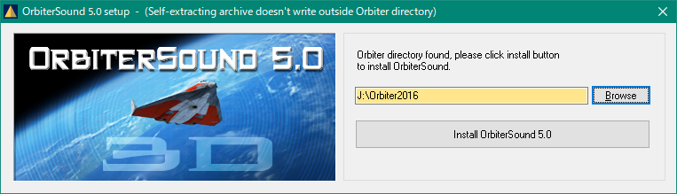
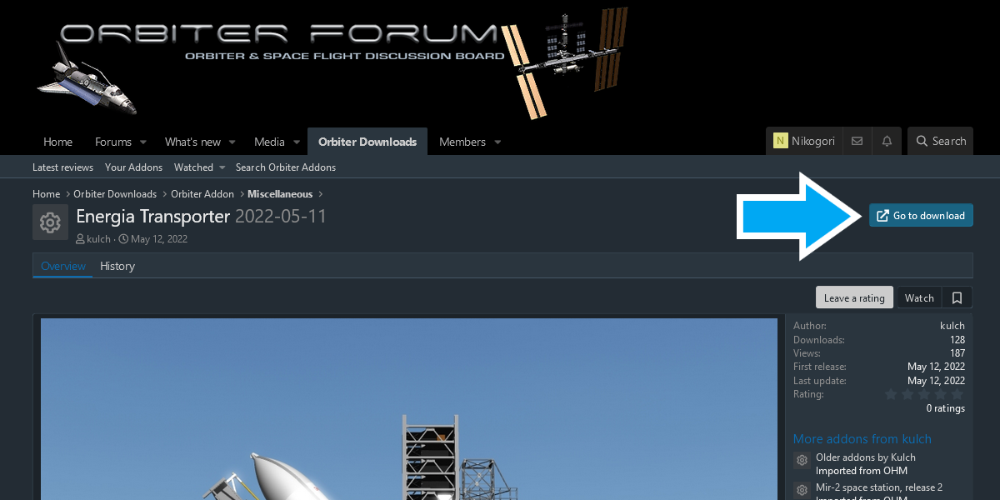
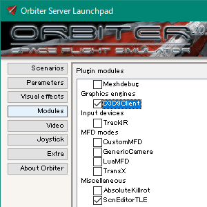

OrbiterにMODを導入する
MODとは何か？
MOD（モッド）というのは「ユーザーが作ったゲームのための追加ファイル」のことです。
ADDON（アドオン）と呼ばれることもありますが、これらはまったく同じものです。
また、MODを入れていない環境のことを「バニラ」と呼びます。
MODの入手方法
OrbiterのMODのほとんどが、Orbit
Hangar Modsにて公開されています。
左上のBrowseと書かれたリンクをクリックすると、カテゴリー別にMODを閲覧することができます。
Downloadと書かれたボタンをクリック。

青字のリンクをクリックすると、ダウンロードが開始される。
MODのインストール
MODによって、インストールの手順は異なります。
インストーラ形式
.exeファイルで配布されているMODの場合は、ダブルクリックしてインストーラの指示に従うだけです。
たいていの場合、以下のような手順になっています。

Browseと書かれたボタンをクリックして、Orbiterがインストールされているフォルダを指定する。
Installと書かれたボタンをクリックすると、中のファイルが自動的にインストールされる。
Zipファイル
Zipファイルなどの圧縮ファイルを自分で解凍して、インストールする必要があるMODも多く存在します。
解凍ソフトについてですが、筆者は7-Zipを使っています。
もちろんこれ以外の解凍ソフトでも問題ありません。
解凍ソフトの使い方については、それぞれのマニュアルを参照してください。
解凍されたMODフォルダの中には、様々なフォルダが入っているはずです。
これをOrbiterのインストールフォルダと比較すると、同名のフォルダが並んでいることがわかります。

（左がOrbiterのフォルダ、右がMODフォルダ）
MODフォルダの中にあるフォルダをすべてコピーして、Orbiterのフォルダにペーストして上書きします。
MODの有効化
一部のMODでは、Orbiterの側で有効化しないと使えないことがあります。
LaunchpadのModulesボタンをクリック。
該当するMODにチェックを入れてください。
その他のケース
重要：MODによってはConfigファイルの編集などが必要なものもあります。※
readmeファイルやマニュアルをよく確認してください。
どうしてもわかりにくい場合は、こちらで質問していただければ可能なかぎり回答します。
※Configファイルの編集が必要なMODの例：
Orbiter2010のグラフィックMOD
Space Elevator MODのダウンロード+インストール
JSGMEを使う
ここまでの内容を踏まえたうえで、以下の記事を参照してください。
JSGMEを使ったMODのインストール
MODの互換性
ダウンロードリンクの右に、対応バージョンが記載されています。

Orbiter2016では、Orbiter2006・2010向けMODの大半が正常に動作しません。
Orbiter2010では、Orbiter2006・2010向けMODの両方が使えます。
当然ながら、2010で2016向けのMODを動かすことはできません。
ごくわずかな例外を除いて、2006のMODは2010で正常に動作します。※
Orbiter2006を導入する必要はありません。
※シナリオファイルの書き換えが必要な場合もあります